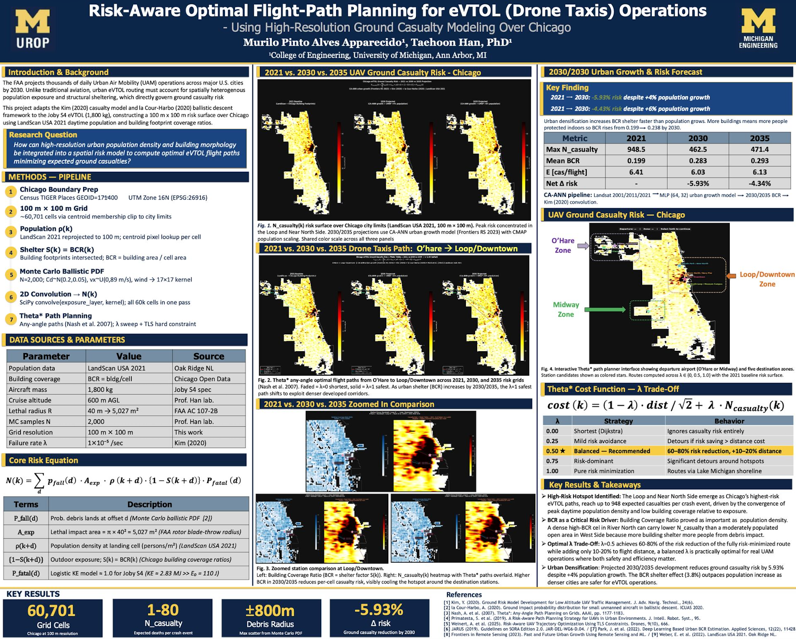
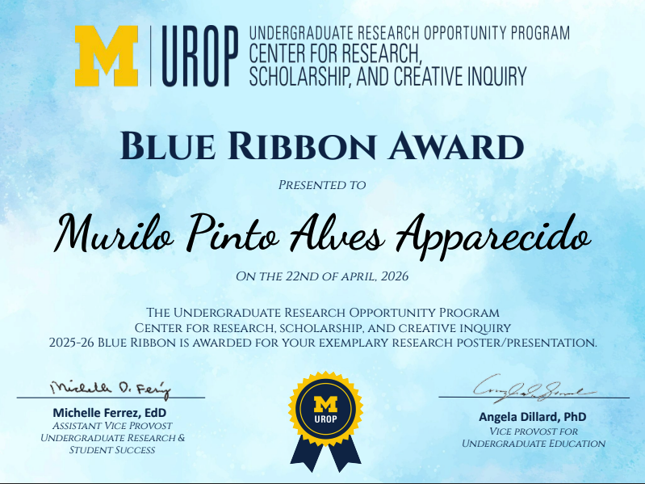

Overview
This project, completed as an Undergraduate Research Assistant at the University of Michigan, develops a risk-aware autonomous path planning system for eVTOL (electric Vertical Takeoff and Landing) aircraft operating over dense urban environments.
The system models third-party ground casualty risk for a Chicago flight corridor by combining population density data, building coverage ratios, and a ballistic descent model for vehicle failure scenarios.
Using Theta* any-angle path planning with a tunable risk-distance cost function, the system computes flight corridors that meaningfully reduce expected casualties with minimal added flight distance.
The work was presented as a poster at the UROP Symposium and won a blue ribbon, awarded by a judge for best poster presentation and research.
Features
- 60,701-cell geospatial risk surface over Chicago at 100m resolution, built from 2021 LandScan population data and building coverage ratios.
- Monte Carlo ballistic descent model simulating vehicle failure scenarios using Joby S4 aircraft parameters.
- Theta* any-angle path planning with a blended risk-distance cost function (tunable via a risk-weighting parameter λ).
- Computed eVTOL corridors achieving 60–80% casualty risk reduction at only 10–20% added flight distance versus shortest-path routing.
- CA-ANN (Cellular Automata–Artificial Neural Network) model forecasting population density and building coverage for 2030 and 2035.
- Forward-looking risk surfaces generated from population forecasts, with Theta* re-run on all three time snapshots to compare route efficiency over time.
Technology Stack
- Language: Python
- Geospatial Processing: GeoPandas, Rasterio
- Scientific Computing: NumPy, SciPy, scikit-learn
- Visualization: Matplotlib
- Data Sources: LandScan population data, Google Earth Engine
Methodology
- Built a three-script pipeline: grid generation, path planning, and future risk prediction.
- Modeled ballistic debris impact zones using Monte Carlo simulation over vehicle failure scenarios.
- Compared route efficiency across multiple risk-tolerance settings to characterize the risk-distance tradeoff.
- Validated findings against existing aviation risk literature, including BCR shelter factor modeling.
Recognition
Presented as a poster at the UROP Symposium (University of Michigan League) and awarded a blue ribbon, awarded by a judge for best poster presentation and research.
